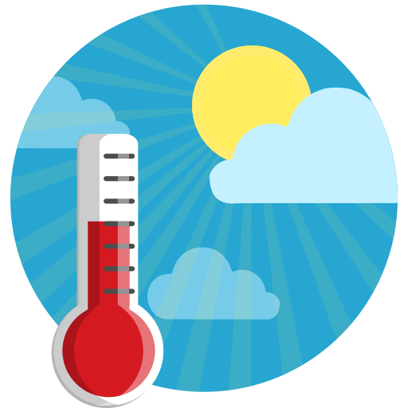

Data
Population: 8,776,109
Capital: Port Moresby
Official Languages: English, Tok Pisin, Motu
Currency: Kina (PGK)
Weather ⛅
Temperature: 20°C
Wind Speed: 15 km/h
Wind Chill: N/A

Population: 8,776,109
Capital: Port Moresby
Official Languages: English, Tok Pisin, Motu
Currency: Kina (PGK)
Temperature: 20°C
Wind Speed: 15 km/h
Wind Chill: N/A
